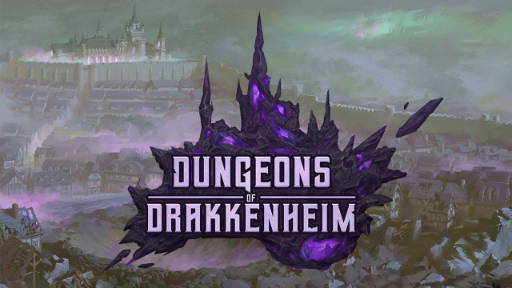
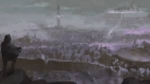

DRAKKENHEIM IS NO MORE. An eldritch storm of falling stars devastated the city on that woeful eve, leaving behind a meteorite that would have lasting effects. Fifteen years later, Drakkenheim is a dismal urban wasteland contaminated by otherworldly magic and haunted by hideous monsters. Fantastic wealth, lost knowledge, and powerful artifacts lie ready for the taking by adventurers brave or foolish enough to venture into the ruins. However, even those who survive the dangers of Drakkenheim may not return unmarked by its terrors!
Iridescent crystals of vast magical potential are found throughout Drakkenheim. Known as delerium, these lambent stones emanate unnatural energies that induce madness and monstrous transformations. Despite these dangers, delerium is ideally suited to crafting magic items and fuelling mighty new spells. Sorcerers, warlocks, wizards, and all manner of occult magicians crave its supernatural power, thus delerium commands a high price within arcane circles and underground markets alike. Many prospectors risk everything to collect a few fragments, but the true origins of the strange mineral remain unknown. The rival factions stand divided over whether the crystals should be destroyed, harnessed, or worshipped, and their simmering disagreements threaten outright war
Drakkenheim was the cosmopolitan capital of Westemär, ruled by the imperious House von Kessel. A decade of bloody civil war erupted after the city’s destruction. The realm was left shattered and the royal line broken. Now, the political order of the wider world lies in shambles, torn apart by religious schism and military conflict, and only a faint hope remains that the city can be rebuilt and the nation restored.
There are more hazards in Drakkenheim than monsters and rival factions. A billowing mist filled with glinting multi-coloured motes has settled over the entire city, which adventurers call the Haze. It’s like the dust never really settled after the meteor fell. Characters gain no benefit from taking a long rest within the Haze. Adventurers should be well-rested before they head into the ruins, as they’ll need to escape the city to regain their hit points and spell slots. This effect cannot be circumvented by any mundane equipment, nor bypassed with spells such as rope trick, tiny hut, or similar character abilities.
Characters will also encounter deadly eldritch contamination caused by creatures, delerium, and other magical phenomena in Drakkenheim. Abilities, equipment, and spells that protect against diseases, magic, or poisons do not work against contamination. It cannot be healed naturally, nor readily removed with low-level spells. Player characters will need to work with the factions and find creative solutions to manage these problems during their adventures.
House von Kessel ruled Westemär from the capital of Drakkenheim for one hundred fifty years. The last monarch, Ulrich IV, inherited a period of relative political stability, and so pursued interests in architecture, education, and carnal affairs instead of politics and warfare. He married a Caspian princess, Lenore, and they had three children: Leonard, Katarina, and Eliza. Ulrich IV was ten years into his reign when the meteor struck Drakkenheim. The King, his wife, and their children were never seen again after that day, but their true fate remains a mystery. However, many members of the royal household were not in Drakkenheim when the meteor struck, including the King’s younger siblings, Mannfred and Cecilia von Kessel. The two spent vast sums commissioning the clergy of the Sacred Flame and the mages of the Amethyst Academy to use divination magic to discern what happened, but to no avail. They nearly bankrupted themselves by launching multiple large-scale military expeditions attempting to reclaim Drakkenheim, all of which failed. Eventually, Mannfred became convinced further efforts were futile, and proposed he would take up the crown and relocate the capital. However, Cecilia contested the claim, arguing there was no conclusive evidence that confirmed their brother and his children were dead. The nobility was divided over the issue, and a civil war ensued that raged for nearly a decade. As Westemär itself descended into political and financial ruin, Mannfred von Kessel and his children were assassinated in a dramatic betrayal. Cecilia von Kessel herself died unexpectedly only a few days later, leaving behind no heirs of her own. Lacking a clear successor, the Civil War ended with a whimper.
Since the royal household were recognizable public figures in their lifetimes, any character proficient in History instantly recognizes them in artwork or portraits. h King Ulrich von Kessel IV was a portly man of average height with a wiry beard and rather unremarkable features, artwork often exaggerates his appearance with a heroic barrel chest, a lush curly beard, and a regal countenance. Stately artwork shows him clad in a royal mantle wearing the Crown of Westemär. Those who knew the King in life remember him as a capable if overindulgent ruler who left most matters of state to his administrators. h Queen Lenore von Kessel was a woman in her late thirties; six feet tall with graceful limbs, hair dyed bright orange, and bleached white skin. Her face had chiseled and angular features, and with every gesture she struck a pose. She wore outrageously ornamented gowns and jewelry, including a famous golden necklace set with eleven emeralds. h Leonard von Kessel was eighteen years old when the meteor struck, but would be thirty three years old now. Leonard took to military interests at a young age. Artwork often depicts him as an aristocratic young soldier with sandy brown hair wearing a dragon-decorated breastplate and wielding a longsword. h Katarina von Kessel was an inquisitive and acrobatic eleven-year-old with wide eyes and auburn hair. She typically wore a frilled shirt, fitted trousers, and cape instead of dresses, and had a penchant for stealing hats. She would now be twenty six years old. h Eliza von Kessel was only six years old at the time of the disaster. The button-nosed child was usually dressed in a bonnet and patterned dress. Assuming she survived, she would be twenty one years old today.